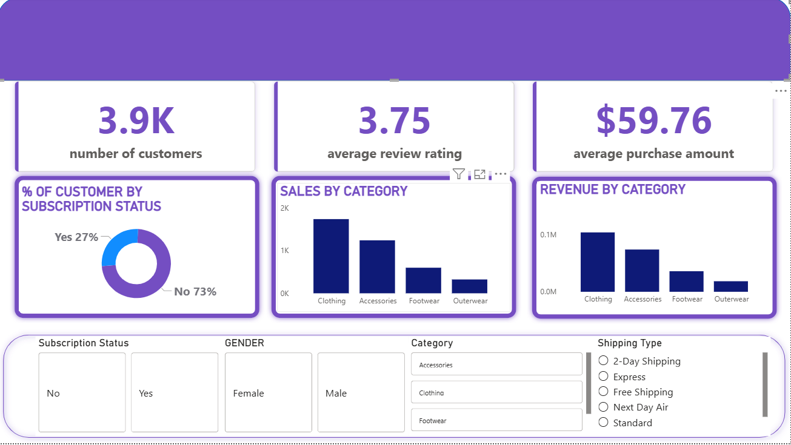
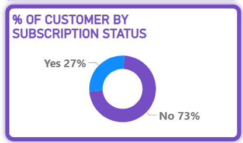
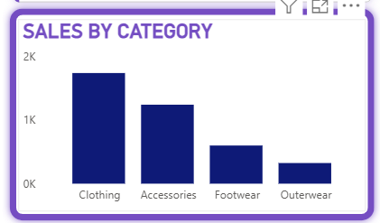
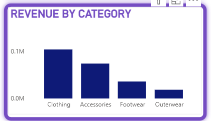

🚀 End-to-End Data Analytics Project | SQL • Python • Power BI
Total Customers
Average Rating
Average Purchase

Full dashboard overview showing all KPIs and insights.

Subscription insights

Category sales breakdown

Revenue insights
Handled missing values (e.g., review ratings)
Replaced null values using median
Standardized column names
Created new features:
age_group
purchase_frequency_days
Revenue by gender
Customer segmentation
High-spending customers
Product performance